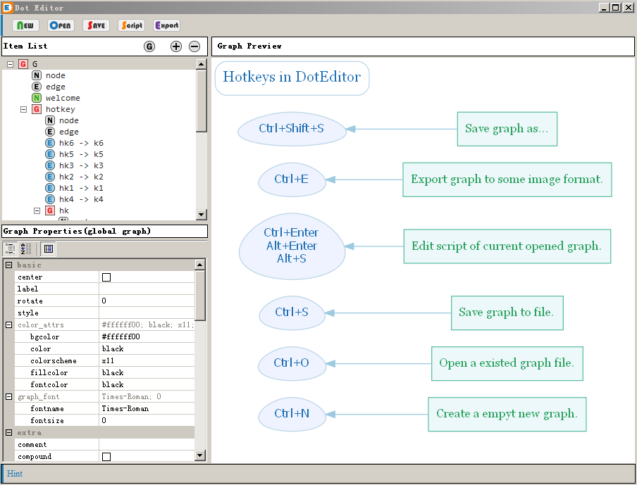
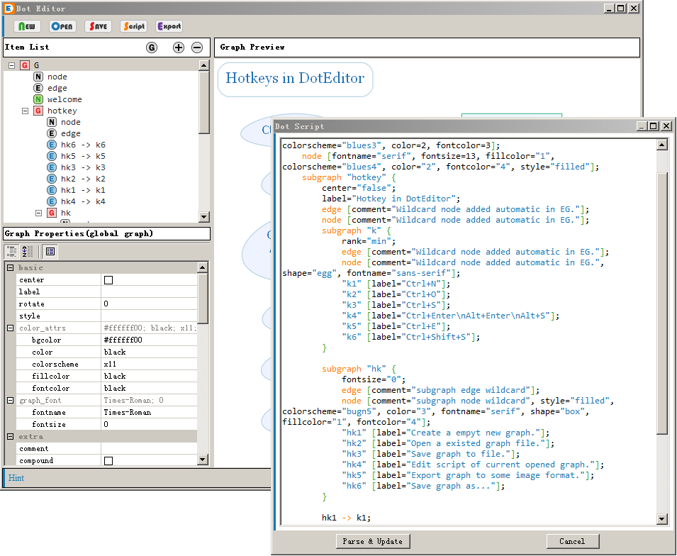
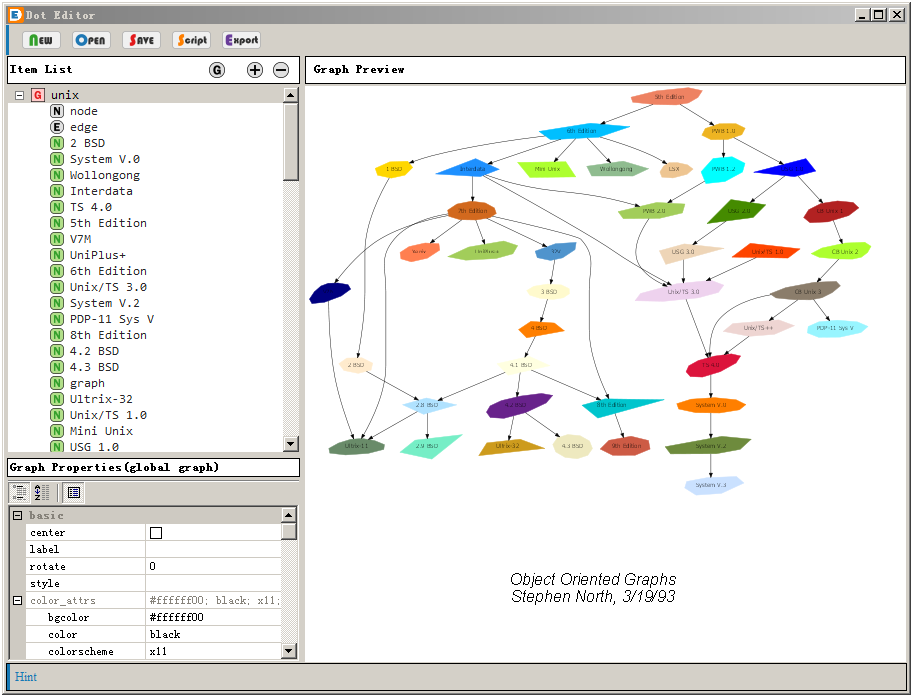
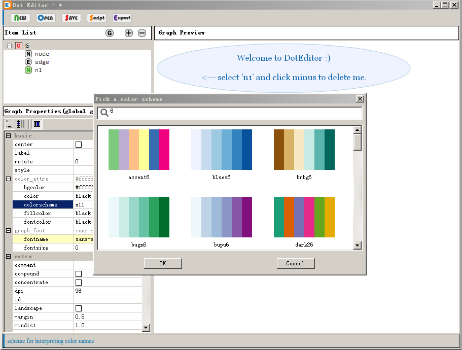
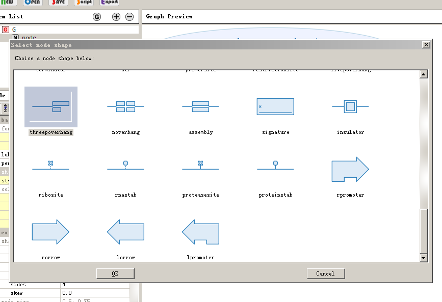
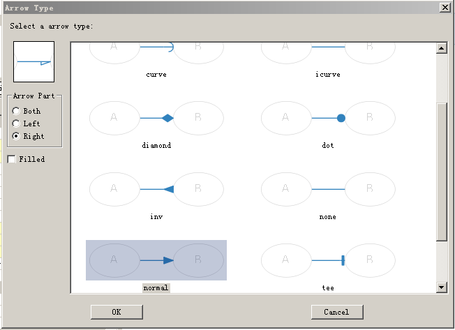

Welcome to DotEditor
This project try to create a easy GUI tools for graphviz. In DotEditor you can simply add node, edge, subgraph and edit their attributes in GUI way. For skilled graphviz user, the DotEditor supply a dot script language editor to write, check and compile to preview.
The features of DE include:
- View and edit graph in natural UI tree view.
- Edit almost all graph/node/edge attributes by mouse clicking.
- Selecting "colorscheme", "color", "node-shape", "arrow-type" by preview.
- Inline render graph into image to preview.
- Simple, easy to use without install.
These is some screenshot of DotEditor.
|  Main Frame |
 Script Editor |
 A Script from graphviz home |
|  Color Scheme Choicer |
 Node Shape Choicer |
 Arrow Type Choicer |
{kind=link}
{kind=link}
{kind=link}
{kind=link}
{kind=link}
{kind=link}
To use the DotEditor, the graphviz MUST installed on the computer. You can download the binary graphviz files from graphviz' homepage: http://www.graphviz.org . As a alternative solution, to add the "graphviz/bin" into the "PATH" environment parameter is also worked fine to run DotEditor.
The DotEditor is published under Apache 2.0 License (http://www.apache.org/licenses/LICENSE-2.0.html).
Binary Release files.
New Windows & MacOSX prebuild binary release! click Windows Exe or Mac 64bit packageto get it. The Mac OS X package built by Jack Lee, Thanks :)
These is new feature in version 0.2:
- More stable in script editor, add "check" button in script window, can help to check script syntax error and make better format of script.
- Zoom and pan in preview window.
- About dialog and some help topic. More help is working in progress.
Again, the binary file needed the graphviz installed on the same machine, click HERE(graphviz 2.36) to download the graphviz installer for windows.
Linux binary release plan is working in progress. Before that, you can use DotEditor by download the source file if you have a python running environment. The dependents is list below.
Use DotEditor in source.
To run the DotEditor.py script, these package or library(in specified version) is necessary.
This is the dependents list.
- Graphviz >= 2.68
- pydot == 1.0.2
- wxpython >= 3.0
- PLY >= 3.4
Thank for using.
Thank for using the DotEditor, if you find bug or want some new feature, please contact me ( forever.h (AT) gmail.com :) ).